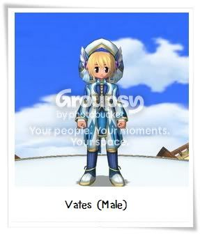
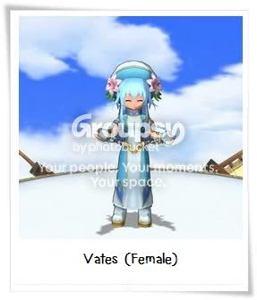

ชื่อ อาชีพ : Vates
ชื่อ SET Vates (Male) : Jazzty Tanny
ชิ้นส่วน UPPER : Jazzty Tanny Rode
ชิ้นส่วน Long Boot : Jazzty Tanny Shoes
ชิ้นส่วน HAT : Jazzty Hat
ชื่อ ชุด SET Vates (Female) : Pop Pooly
ชิ้นส่วน Body Suit : Pop Pooly Ro de
ชิ้นส่วน HAT : Pooly Hatty
ชื่อ Character : LightAngel
ชื่อ Server : Takoyaki